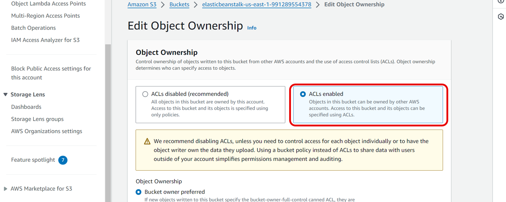
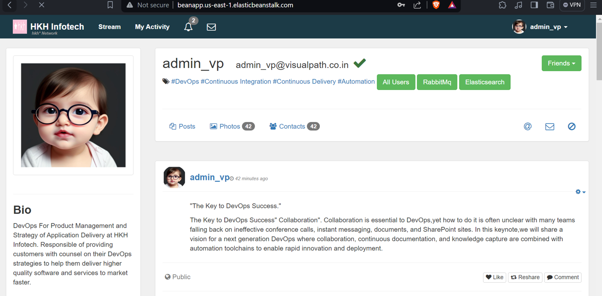

Create and configure Beanstalk
In this implementation, we will create and configure Beanstalk to deploy EC2s, Auto Scaling, Application Load Balancer and S3 services. With Beanstalk, you can quickly deploy and manage web applications without having to concern about the infrastructure. Furthermore, Beanstalk also reduces the management complexity.
Create IAM role
-
Go to the IAM console
- Click Roles.
- Tick the role name aws-elasticbeanstalk-service-role, click Delete.
-
Click Roles and then Create role
Create and configure Beanstalk
-
Go to the Beanstalk console.
- Click Environments.
- Click Create environments.
-
In the Select trusted entity
- Select AWS service.
- Opt for EC2 in Use Case field.
-
Tick the four policy as below, click Next
-
In the Name, review and create page
- Enter beanstalk-role in Role name and Description.
- Click Create role.
-
In the Configure service access
- Click Create and use new service role in Service role.
- In Service role name, enter aws-elasticbeanstalk-service-role.
- In EC2 key pair, select wokrshop-keypair.
- Click Next.
-
In Virtual Private Cloud
- Select fcj-workshop VPC.
- Click Create.
-
In Capacity field
- Choose Load balanced.
- Enter 3 and 6 for Min and Max respectively.
-
In Instance types and Scaling triggers fields
- Pick t2.micro.
- Choose CPUUtiliaztion.
- Click Next.
-
In Rolling updates and deployments field
- Choose Rolling in Deploy policy.
- At Batch size type, choose Percentage.
- Enter 50 in Deployment batch size.
- Click Next.
-
Review the configuration, click Submit

Configure S3
-
Go to the S3 console.
- Click Environments.
- Click elasticbeanstalk ….
-
Click Permissions tab
- Click ACLs enabled.
- Click Save changes. 
Deploy web application and connect backend services
-
Go to the EC2 console.
- Click Environments.
- Copy the Security Group ID of the Beanstalk’s EC2.
-
Go to the Security Groups dashboard
- Select backend-sg.
- Click Edit inbound rules.
- Select All traffic and paste the Security group ID we have copied, click Save rules.
-
Go to the Beanstalk console
- Click Configuration section.
- Click Action > Edit.
- Enter /login in Path field.
- Tick the Enabled in Session stickness.
- Click Save.

-
Click Add Listener in Listeners section
- Enter 443.
- Select the public certificate that we created in Certificate Manager and click Save.
- Roll to the bottom of thep page and click Apply.


-
Open the Visual Code IDE or any other IDE
- At the search bar, paste this Repository link to clone the repository.
- Open the terminal, check the mvn version by using mvn –version command.
-
Go to vprofile-project/src/resources/application.properties
- Enter the Master endpoint, Master user, and Password that we saved after we had created RDS cluster, ElastiCache, Amazon MQ
- Enter mvn install in the terminal.
-
Verify the artifact built
-
Go to the Beanstalk console
- Click Upload and deploy.
- In Choose file, upload the artifact we have built.
- Click Deploy.
- Wait for few minutes to continue testing.
-
Test the web application deployment
- Click the Domain.
- Enter admin_vp as username and password.
- Click Login.

Set up SSL/TLS and domain name for the web application
- Go to the GoDaddy or any other providers
- Click DNS.
- Click Add a new record.
- Choose CNAME, enter fcj in Name field and paste the Domain in Beanstalk console.
- Verify the certificate by enter your new domain name in web browser and click to the icon as the image below: